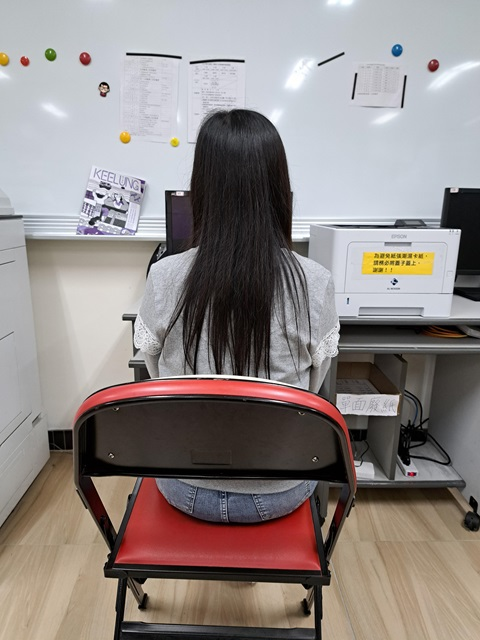

| 國文老師:蔡靜茵 |
我們的國文老師是一位脾氣非常溫和的人，對學生總是耐心教導，從不輕易發脾氣。她消息靈通，對學校內外的大小事都瞭若指掌， 讓我們常常從她那裡得知最新的訊息。在課堂上，她深入淺出地講解文言文，讓原本艱澀難懂的古文變得生動有趣。我們不僅學到了許多文言文的知識，也更加喜歡 上了國文課。 |
|
| 地理老師:余玲觀 |
我們的地理老師上課非常有趣，總是能用生動的例子和圖片讓我們了解各地的風土人情。她講課方式幽默風趣，常常逗得全班哈哈大 笑，讓地理這門課變得一點也不枯燥。除了課堂內容豐富，她也很關心同學的學習成績，經常在課後幫我們補充重點，還會給我們很多加分的機會，不論是小測驗、 報告或課堂參與，只要認真表現就能拿到加分。 |
 |
| 歷史老師:黃期榕 |
我們的歷史老師上課非常認真，總是準時進教室，準備充足的教材來幫助我們理解歷史事件。他不只講解課本上的內容，還會補充很 多課外的歷史知識，像是人物背景、時代背景或是有趣的歷史故事，讓課堂內容更加豐富有趣。我們常常因為他補充的小故事而對歷史產生更深的興趣。 |
|
| 公民老師:洪敏純 |
洪敏純老師就像一個Google網頁，無論我們問什麼問題，她幾乎都能立刻回答，反應又快又準確。她的知識非常廣泛，尤其對 法律方面特別了解，常常用生活中的例子來幫我們解釋法律觀念，讓我們更容易理解。有時我們問她課外的問題，她也總是能補充許多有用的資訊，讓人佩服不已。 |
|
| 自然老師:林耀欽 | ||
| 英文老師:王郁珊 |
我們的英文老師是一位十分善良的老師，對每位同學都很有耐心，從不責罵學生。即使我們在課堂上回答錯誤，她也會用鼓勵的語氣 引導我們找出正確答案，讓我們不會因為犯錯而感到害怕。她總是關心我們的學習狀況，會主動詢問我們有沒有需要幫忙的地方，甚至在課後也願意留下來輔導。 |
 |
| 音樂老師:萬怡婷 |
我們的音樂老師是一位充滿熱情的老師，她不僅教我們唱了許多好聽的歌曲，還細心地教我們如何吹奏直笛。她會一步一步示範吹直笛的方法，從指法到節奏都教得非常清楚，讓我們能夠慢慢學會。 |
|
|
表藝老師:林佑霖 |
我們的表藝老師是一位非常有創意又充滿活力的老師，他教了我們很多關於表演的技巧，像是肢體表達、聲音控制和情緒的展現，讓 我們在表演時更有自信、更自然。他鼓勵我們勇敢表現自己，也讓我們發現原來每個人都有舞台魅力。在他的帶領下，我們對表演越來越有興趣，也更加願意在 眾人面前展現自己。 |
|
| 美術老師:游泓毅 |
 |
|
|
健教老師 :賴芸峰 |
賴芸峰老師不僅是一位負責的健康老師，也是我們羽球社的指導老師。在健康課上，他會用輕鬆有趣的方式講解身體構造、營養知識 和健康習慣，讓我們更了解如何照顧自己的身體。而在羽球社時，他又變得非常有活力，親自示範動作、指導技巧，還會和我們一起練習、對打，氣氛熱烈又充滿挑 戰 |
|
| 體育老師:洪志明 | 體育老師外表看起來兇兇的但其實人很好 常常跟同學一起打球一起聊天 有時候還會請學吃糖果 也很認真地在帶領同學認識體育 | |
| 生科老師:馬承潔 |
科技老師上課都會很認真地教我們，並且會嚴肅的提醒我們安全事項，也會 | |
| 電腦老師:吳慶鴻 | 電腦老師是一個年輕的老師每次都會耐心地教我們 即使同學們在吵鬧他也不會生氣 同學都很喜歡他 |  |